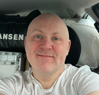

Tommy Brueland (no css here)

Summary
Hardworking invidual with experience in a lot of different areas.
Education
- 2008-2009 - eCademy - Cisco Administrator
- 2001-2002 - Næringsakademiet Stavanger - IT-Prosjekt
- 1994-1995 - Utgarden folkehøgskole - Chef Pastry Chef
- 1993-1994 - Time Vidaregåande skole - Technical drawing
Work Experience
- 2024-present - SCA Wood AB - Timbertruck driver
- 2022-2024 - Halvorsen Service Partner AS - Caretaker
- 2022-2022 - Shawcor Norway - Industrial worker
- 2014-2014 - Della Italiano AS - Chef/waiter
- 2009-2022 - Opplysningen 1881 AS - Customer service
- 2006-2009 - Narvesen 288 - Store worker
- 2003-2004 - Idrettens bowlingsenter AS - Customer service
- 1996-2001 - Kverneland Klepp AS - Industrial worker
- 1993-1994 - Radio 1 Jærradioen AS - Technician
Other
- Driver license class B
- Forklift license sept 2024
- Skyift license jan 2023
Contact me